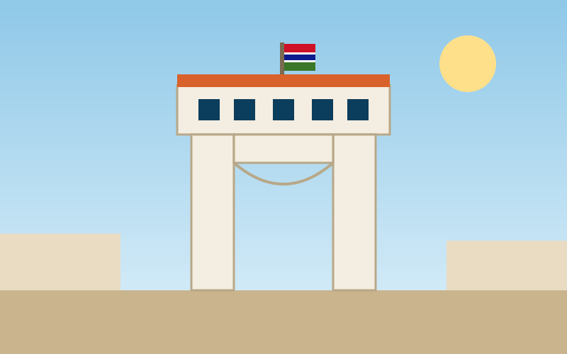
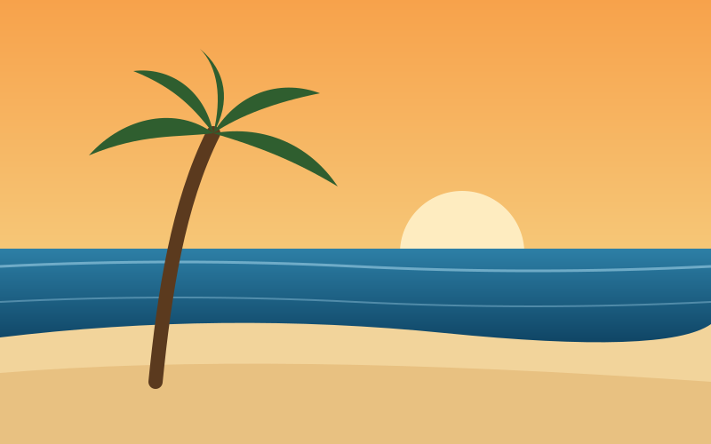
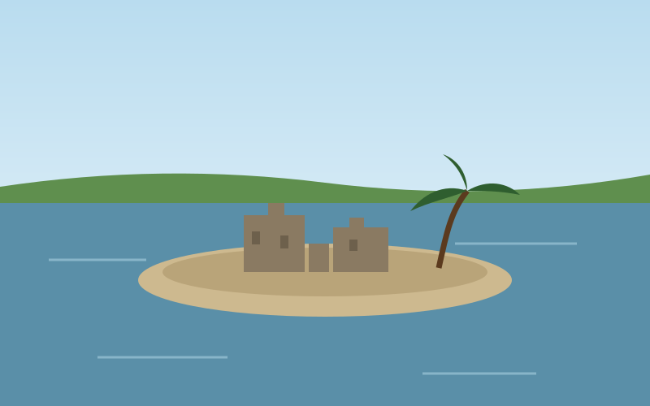
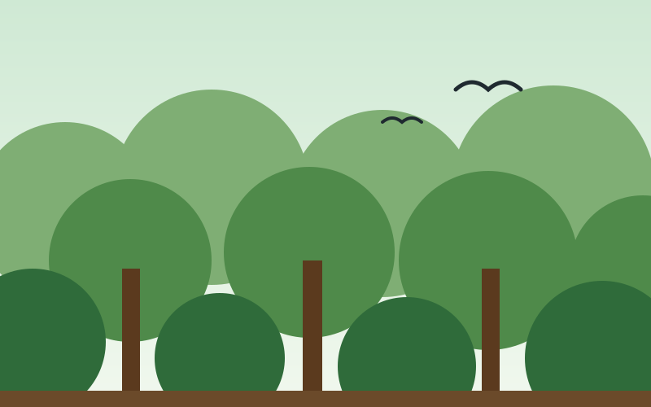
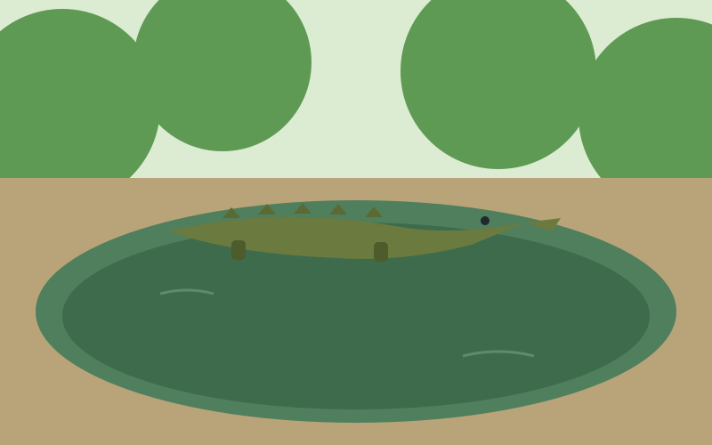
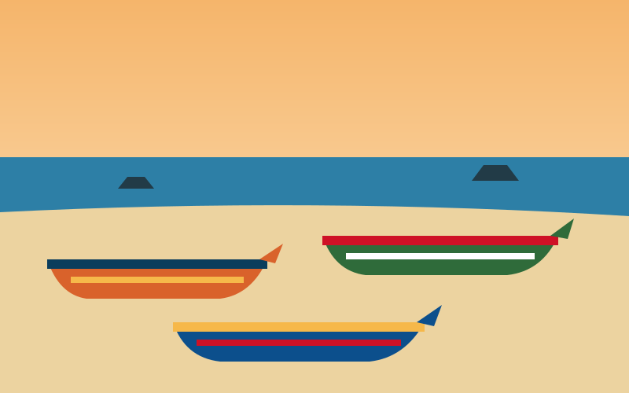
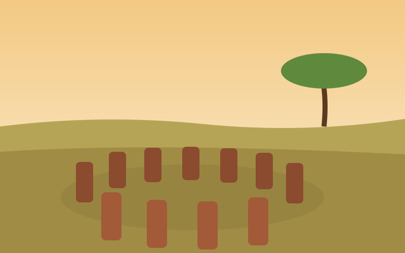
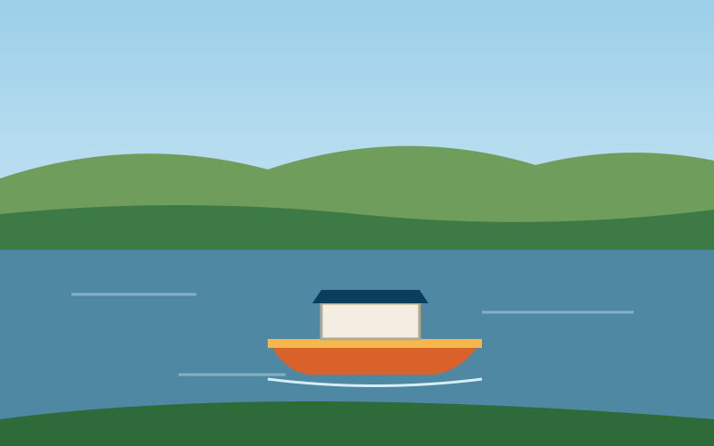

Banjul
The capital sits on an island at the mouth of the river. Climb Arch 22 for city views and explore the busy Albert Market.
Travel guide · West Africa
Golden beaches, a mighty river, and some of the friendliest people you will ever meet. This guide helps first-time visitors decide where to go, what to see, and how to prepare.

The Gambia is small, so you can reach most of these places within a day trip from the coast.

The capital sits on an island at the mouth of the river. Climb Arch 22 for city views and explore the busy Albert Market.

A UNESCO World Heritage site in the River Gambia and an important place for learning about the history of the slave trade.

The country's first protected area. Walk shaded forest trails to spot monkeys, monitor lizards and hundreds of bird species.

A sacred pool in Bakau, home to calm crocodiles. There is also a small museum about local culture and traditions.

Watch colourful boats bring in the day's catch in the late afternoon. It is lively, noisy and a great place for photos.

Ancient standing stones further upriver, part of the Senegambian Stone Circles World Heritage site. Ideal for a longer trip.

A few simple things that will make your first visit easier and more enjoyable.
Carry some cash in dalasi. Cards work in larger hotels, but markets and taxis usually want cash.
Green "tourist taxis" wait outside hotels. Agree on the price before the trip starts.
The dry season (November to May) is sunny and comfortable. The rainy season is hot, humid and very green.
Dress modestly away from the beach and always ask before taking photos of people.